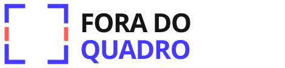
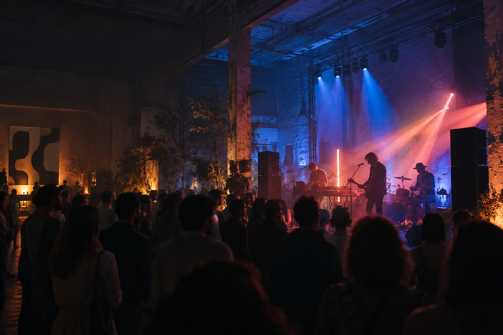
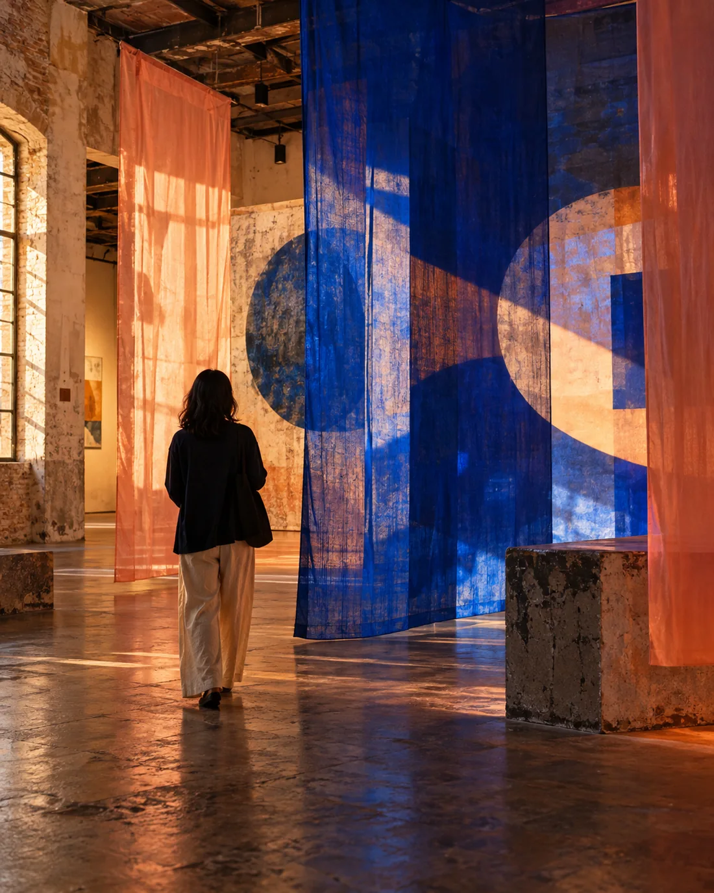

OUVIR DE OUTRO JEITO
Música
em movimento
Sets independentes, escutas compartilhadas e sons que atravessam fronteiras de gênero.

Ouça o conceitoMÚSICA INDEPENDENTE / ARTES VISUAIS / ENCONTROS
Cultura que não cabe
na moldura.

FQ
001
Uma faixa vira paisagem. Uma imagem vira conversa. Um encontro abre espaço para outra ideia. Fora do Quadro é um convite imaginário para atravessar formatos e descobrir cultura em estado de movimento.
Três eixos imaginários se encontram sem pedir licença entre linguagens. Cada um abre uma porta — nenhuma fecha a experiência.
OUVIR DE OUTRO JEITO
Sets independentes, escutas compartilhadas e sons que atravessam fronteiras de gênero.
VER ALÉM DA SUPERFÍCIE

ENCONTROS QUE DESLOCAM
Rodas, conversas e processos abertos para fazer junto — sem palco obrigatório.
FAZER JUNTO TAMBÉM É UMA LINGUAGEM.
Uma amostra conceitual de como os encontros poderiam acontecer. Sem datas, horários ou atrações reais.
ESCUTA COLETIVA
LABORATÓRIO VISUAL
RODA ABERTA
ESTES FORMATOS SÃO EXEMPLOS FICTÍCIOS CRIADOS PARA ESTA PÁGINA.
UM SOM PARA SAIR DA MOLDURA
Uma pequena paisagem instrumental feita para este conceito. Sem reprodução automática: o som começa só quando você escolher.
Faixa pausada.
05 — FRAGMENTOS DE UM LUGAR IMAGINADO
Cada imagem desta página faz parte de um conceito visual criado para apresentar o festival imaginário.
IMAGENS CONCEITUAIS · 2026Não. É um projeto conceitual de portfólio. Nome, identidade, imagens e formatos foram criados para demonstrar uma experiência digital.
Não há data, local, artistas, horários, patrocinadores ou ingressos. A programação exibida é apenas demonstrativa.
Não. Esta página não vende ingressos nem coleta inscrições. Os botões levam a conteúdos desta própria página.
É um contato fornecido para conversar sobre este projeto de portfólio. Não representa atendimento de um evento real.